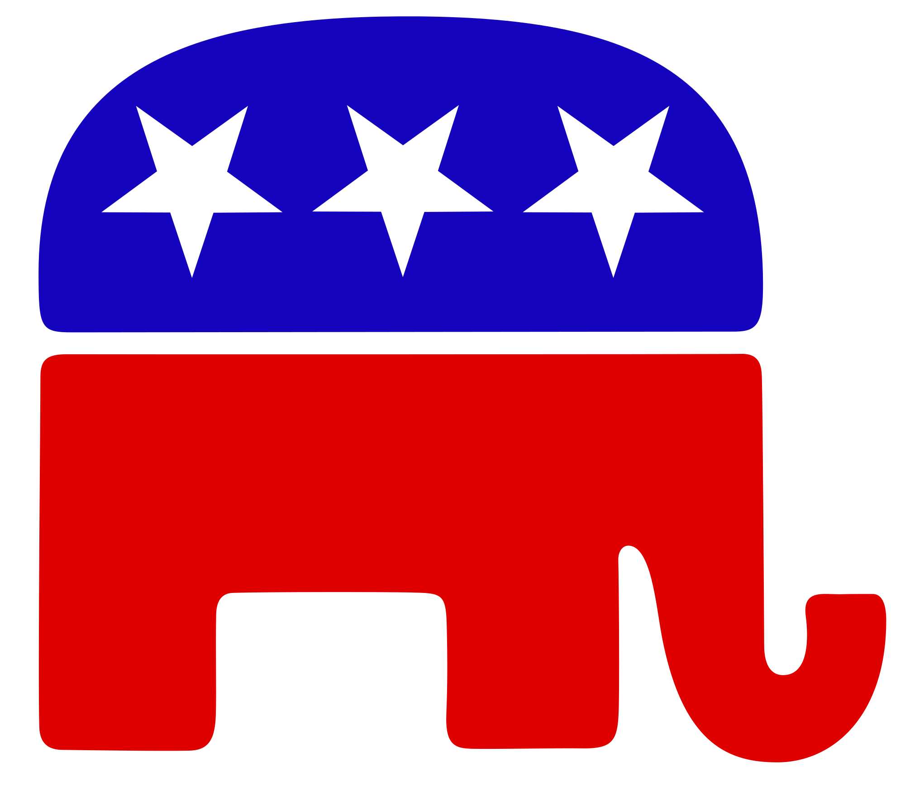

Introduction to the Republican Party
The Republican Party, also known as the GOP (Grand Old Party), was
founded in 1854 as an anti-slavery party. Today, it is one of the two
major political parties in the United States. Republicans generally
advocate for limited government, individual freedoms, free-market
capitalism, and a strong national defense. Their platform is rooted in
conservative values, emphasizing personal responsibility, traditional
social norms, and the protection of constitutional rights.
Key Policies and Ideals
The Republican Party champions lower taxes, reduced government spending,
and deregulation to stimulate economic growth. Republicans believe in
limited government intervention in the economy, arguing that a free
market allows for innovation, job creation, and personal economic
freedom. They also advocate for reducing the national debt and
controlling government deficits by cutting government programs and
services.
On social issues, Republicans tend to uphold traditional values. Many
within the party oppose abortion rights, support the Second Amendment's
right to bear arms, and favor stronger immigration laws to protect
national borders and ensure national security. Republicans often promote
a strict interpretation of the U.S. Constitution, advocating for the
preservation of states' rights.
National Defense and Foreign Policy
National defense is a cornerstone of Republican policy. The party
supports maintaining a strong military presence around the world,
arguing that peace can only be preserved through strength. Republicans
advocate for increased defense spending to ensure that the United States
remains capable of protecting its interests both at home and abroad.
On foreign policy, Republicans generally promote American leadership and
intervention in global affairs when necessary to protect national
security or to support democracy abroad. Historically, Republicans have
pushed for policies that maintain the U.S. as a global superpower, while
also encouraging strong alliances with key international partners.
Current Leader of the Republican Party


As of 2024, Donald Trump is recognized as the leader of the
Republican Party. Having served as the 45th President of the United
States from 2017 to 2021, Trump continues to have a significant
influence over the direction of the party. His leadership is
characterized by a strong stance on immigration reform, America-first
policies, deregulation, and economic nationalism.
Donald Trump's popularity within the Republican base remains high, and
his endorsement is often seen as crucial for Republican candidates
running for office. His influence extends beyond policy and into the
broader conservative movement, where his positions on trade,
immigration, and foreign policy continue to shape the GOP's platform.
Many within the party support his calls for reducing government
interference in the economy, preserving American jobs, and securing the
nation’s borders.